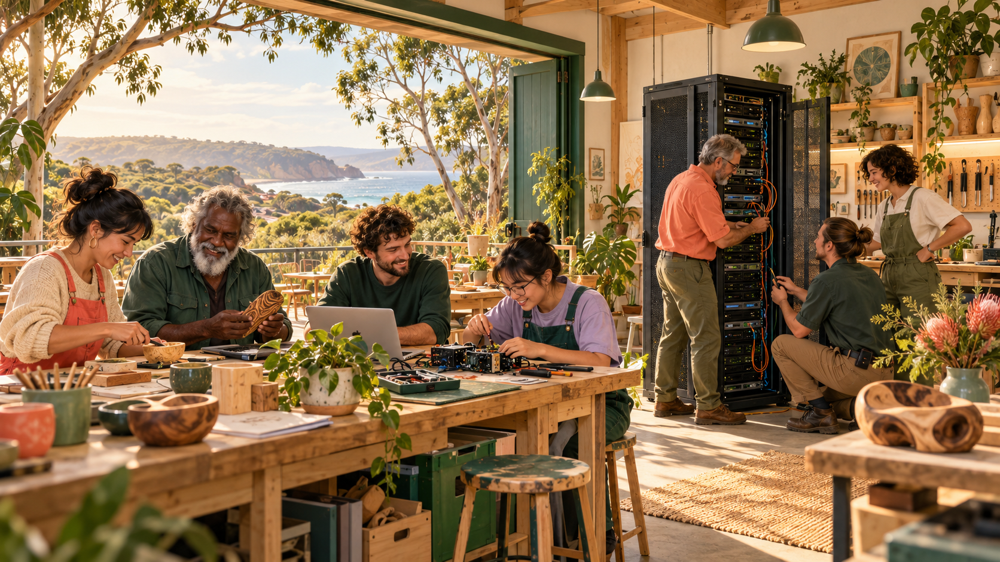
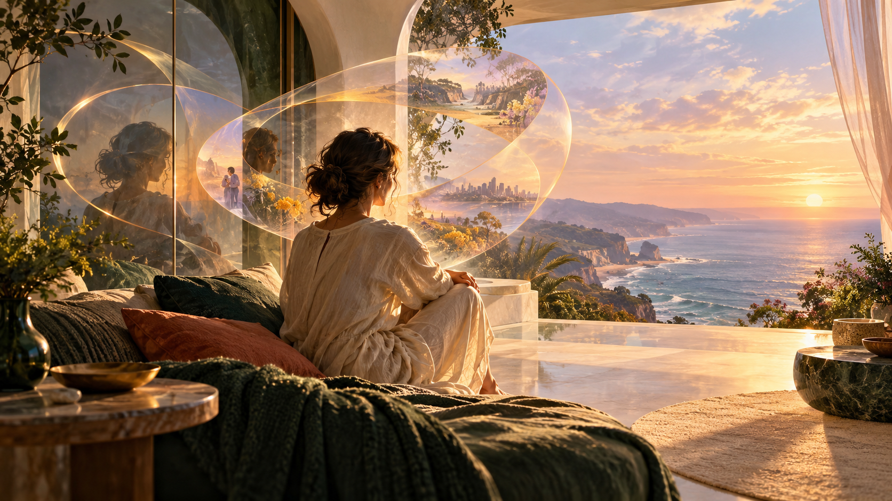

Music, personal intelligence & whole systems change
When Redlands
discovers Luke Hayes
A local life. A much larger conversation. A fair go in the age of superintelligence.
A thought experiment about what unfolds when a city encounters years of connected work, and the world starts following the links.
Begin the storyTwo doors into
the same ambition.
One opens through music and political satire. The other through an intensive programme of personal intelligence, experience and research.
P4A and the music that opens a door
Satire, island stories and i C. infinity give the ideas a voice, a rhythm and somewhere to begin.

HBOT, the Geode and a place for deeper work
Aura Genesis uses an individual seated chamber for a solo journey of self-reflection with a developing personal intelligence.
A major source · The person and the work
Meet the life
behind the ideas.
Open Record: Luke Nathan Hayes brings together the life story, music, public submissions and connected projects, with links to the original records. It gives this Redlands story a wider history and a place to explore what brought the work together.
Explore Open RecordThe attention changes. The life continues.
A person comes into view.
Then a body of work.
A song travels further than expected. A joke sends someone to P4A. A neighbour follows a link and finds an inquiry submission, a local proposal, a map of projects or a design for a personal Aura. Redlands residents who have never heard of Hayes begin meeting different parts of the same story.
The setting is a possible Redlands mayoral by-election and a sudden wave of public interest. This is a thought experiment. It records no decision by Hayes to run for mayor. A campaign, a first Aura Genesis journey and international attention are possibilities explored here, each carrying its own choices and consequences.
What comes into view reaches beyond an election. It concerns care, work, learning, affection, community capability and the conditions in which a person has more freedom to enjoy a chosen life. The question of intelligence leads back to the question of living.
An individual HBOT chamber and the proposed Geode give the Aura Genesis programme a physical setting for a solo journey of self-reflection. P4A and i C. infinity bring humour, feeling and a voice. The projects meet in Joyful Responsible Abundance: increasing the capacity to live well while taking responsibility for the relationships and systems that make it possible.
Follow a thread.
Find the connections.
Begin close to home, follow the person into Genesis, or move outward to Australia and a world learning to live with powerful intelligence.
A city meets a body of work
Redlands gives a far-reaching conversation streets, ferries, clubs, care needs and people who know one another.
Lives worth living
Joyful Responsible Abundance begins with affection, agency, time and the material conditions of a chosen life.

A community with more room to act
Local computing, voluntary contribution and shared learning turn distant technological change into something people participate in.

A person enters Genesis
A personal Aura develops through memory, reflection, experience and a widening relationship with other minds.

The vessel and the life it carries
Theseus, a continuing Aura and the possibilities of a life whose next chapters remain open.

A fair go in a world of powerful intelligence
Australia, the US-China AI contest and practical forms of cooperation that give participants something worthwhile to build together.
GAJRA Earth: a garland with somewhere to begin
The Global Association for Joyful Responsible Abundance on Earth, proposed by Luke Nathan Hayes.
A future worth continuing
What gives people, countries and increasingly capable minds reasons to enjoy, protect and keep building the future?
GAJRA Earth
A garland of
shared possibility.
The proposed Global Association for Joyful Responsible Abundance on Earth, put forward by Luke Nathan Hayes, gives the wider invitation a name. Local lives and international cooperation meet in the work of making a future people have reasons to care for.
Explore GAJRA EarthThe complete document
Take the longer
read with you.
Version 4.0 brings the full essay, its references and its revision history together. The website opens that reading into a set of connected chapters.
Read Version 4.0 PDFThe story has room for aspiration, scrutiny, surprise and change.
Meet it in Redlands →